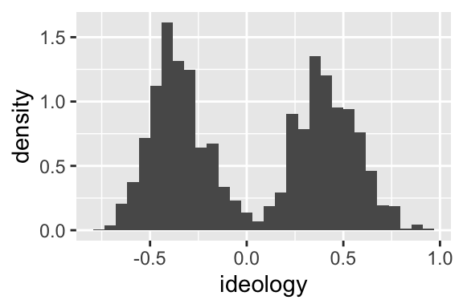

Chapter 4 Location and Scale
4.1 The Intuition
If we took a histogram and tried to describe it to someone else without showing it to them, the most most important pieces of information are usually the location and scale.1
We might describe the variable this way: “The values are about __________, give or take ________ or so.” We can think of the first blank as the location and the second blank as the scale.
- The location describes where the histogram is positioned along the left-right axis.
- The scale describes the width (or “spread” or “dispersion”) of the histogram.
Inspect the histogram of a hypothethical variable to the right. Notice the location and the scale. If we had to describe these data, we might say that our variable is “about zero give or take one or so.”

While this variable has a particular location (about zero), we can imagine shifting it left or right. The figure below shows some possible shifts. We could shift it way to the left, so that it’s “about -6” or a little bit to the right so that it’s “about two.”

We can also imagine increasing the scale (more spread) or decreasing the scale (less spread). The figure below shows some possible changes in scale. In each case, the “give or take” number is changing.

4.2 The Usual Measures
4.2.1 The Average
The most common measure of the location of a variable is the average.2 Suppose we have a variable (a list of numbers) \(X = \{x_1, x_2, ..., x_n\}\).
\[\begin{equation} \text{average} = \dfrac{\text{the sum of the list}}{\text{the number of entries in the list}} = \dfrac{\sum_{i = 1}^n x_i}{n} \nonumber \end{equation}\]
The average is easy to compute and easy to work with mathematically.3
Unfortunately, the average doesn’t have an easy interpretation. The best interpretation, in my mind, is as the balance-point for the data. If we imagine the left-right axis as a teeter-totter and stack the data along the beam according to their values, then the average is the position of the fulcrum that would balance the data-filled beam.

4.2.2 The Standard Deviation
The most common measure of scale is the standard deviation (SD). The intuition is subtle, so let’s look a a simple example. Rember, our goal is a "give-or-take number.
Suppose we have a list of numbers \(X = \{1, 2, 3, 4, 5\}\). The average of this list is 3, so we can compute the deviation from average for each value.
\[\begin{equation} \text{deviation from average} = d = \text{value} - \text{average} \nonumber \end{equation}\]
In this case, \(d = \{-2, -1, 0, 1, 2\}\).
We want to use these deviations to find a give-or-take number.
Here’s an initial idea. Just take the absolute values \(|d| = \{2, 1, 0, 1, 2\}\). These tell us how far each entry falls away from the average. Then we could average the absolute devations to find how far a typical entries falls away from the average of the list. In this case, we get 1.2. This is reasonable approach and we’ll refer to it as the average absolute devation or a.a.d. (It turns out that the a.a.d. isn’t a common quantity, so I don’t elevate it with an all-caps acronym.)
The a.a.d. has one big problem–it uses an absolute value. This introduces some computational and mathematical difficulties.4

So let’s do something similar. Rather than take the absolute value, let’s square the deviations, take the average, and then undo the square at the end, so that \(\text{SD} = \sqrt{\text{avg}(d^2)}\).
Sometimes taking the (3) square root of (2) the average of (1) the squares is called the RMS. In this case, the RMS of the deviations from the average is the SD, so that
\[\begin{equation} \text{SD} = \sqrt{\text{avg}(d^2)} = \sqrt{\dfrac{(x_i - \text{avg}(X))^2}{n}} = \text{RMS of deviations from average}. \nonumber \end{equation}\]
The SD moves smoothly as you move around the entries in the list.
To calculate the SD, first make this little table, with the list of values, the deviations from the average, and the squares of the deviations.
| \(X\) | \(d\) | \(d^2\) |
|---|---|---|
| 1 | -2 | 4 |
| 2 | -1 | 1 |
| 3 | 0 | 0 |
| 4 | 1 | 1 |
| 5 | 2 | 4 |
Then compute the average of the squares of the deviations, which in this case is 2. Then take the square root of that average, which in this case is about 1.4. Notice that 1.4 is about 1.2 (the a.a.d.). The SD is bounded (weakly) below by the a.a.s., but they’ll usually be close, so we can think of the SD as how far a typical point falls away from the average.
4.3 Robust Alternatives
The average and the SD are mathematically nice. But they are not robust. Seemingly innocuous changes in the variable can lead to large changes in the average and SD.5
We can definite robustness more concretely: How many observations do I need to corrupt to make the summary arbitrarily large?
Suppose the toy variable \(X = \{0.1, -0.6, 1.1, 1.3, 0.2\}\). If I replace the first entry (0.1) with 1, 5, 10, 50, and so on, what happens to the average and SD? The table below shows that we can easily manipulate the average and SD by changing only one data point. In this sense, the average and SD are fragile.
| Summary | Average | SD |
|---|---|---|
| Actual Data Set | 0.42 | 0.70 |
| First entry of \(X\) replaced with 1 | 0.60 | 0.71 |
| …with 5 | 1.40 | 1.92 |
| …with 10 | 2.40 | 3.86 |
| …with 50 | 10.40 | 19.81 |
| …with 100 | 20.40 | 39.81 |
| …with 500 | 100.40 | 199.80 |
| …with 1,000 | 200.40 | 399.80 |
If corrupted data present a problem, then what do we mean by “corrupt”? There are (at least) three ways to imagine corrupting a measurement.
- First, perhaps we have a data entry error. While entering data in a spreadsheet, you entered the number 50,000 into the “hours spent watching the news per day” variable instead of the “income” variable.
- Second, perhaps our measurement procedure is noisy. Suppose we are coding Twitter posts by their support or opposition to President Trump. Our algorithm might interpret a sarcastic take as support when it actually presented intense opposition.
- Third, the substantive model might not apply to a particular observation. Take Clark and Golder’s project as an eplxame. They suggest that SMD systems should only have two parties. Indeed, this is a strong theoretical equilibirum. However, it might take several elections to reach this equilibrium. Parties might take several years to coordinate and consolodate. If we include a new democracy in the data set, then we might consider these data “corrupted” since the conceptual model doesn’t apply (yet).
The average and SD respond to even a small amount of corrupt data.
As an alternative to the average, we might use the median, which is more robust. The median is the/a number which splits the values in half, so that equal numbers of entries lie above and below the median.
We have two common robust alternatives to the SD. The interquartile range (IQR) is the difference between the 25th and 75th quantiles. The median absolute deviation (MAD) is the median of the absolute values of the deviations from the median (almost the a.a.d., but using the medians in place of averages). It turns out that multiplying the MAD by 1.4826 makes it similar to the SD in many dataset, so it’s common to rescale it.
To illustrate the robustness of each of our measures of location and scale, let’s imagine a variable with 10 observations \(X = \{-1.1, 1.5, -1, -0.1, -1.1, 0, -0.4, 0, 0.8, 0.4\}\). Let’s see how the measures change as we corrupt more and more of the observations.
| Summary | % Corrupted | Average | SD | Median | IQR | MAD |
|---|---|---|---|---|---|---|
| Actual Data Set | 0% | -0.10 | 0.81 | -0.05 | 1.15 | 0.96 |
| First entry of \(X\) replaced with 100 | 10% | 10.01 | 30.01 | 0.00 | 1.03 | 0.89 |
| First two entries… | 20% | 19.86 | 40.07 | 0.00 | 1.03 | 0.89 |
| First three entries… | 30% | 29.96 | 45.85 | 0.20 | 75.28 | 0.89 |
| First four entries… | 40% | 39.97 | 49.02 | 0.60 | 100.00 | 2.00 |
| First five entries… | 50% | 50.08 | 49.92 | 50.40 | 99.90 | 73.54 |
| First six entries… | 60% | 60.08 | 48.89 | 100.00 | 99.50 | 0.00 |
This table illustrates that while the average and SD respond to any corruption, the median, IQR, and MAD remain reasonable summaries of the uncorrupted variable with 40%, 20%, and 30% of the data corrupted, respectively. T
The percent of the data that one can corrupt before they can make the measure arbitrarily large is called the breakdown point. Here are the breakdown points for our measures:
| Measure | Breakdown Point |
|---|---|
| Average | 0% |
| SD | 0% |
| Median | 50% |
| IQR | 25% |
| MAD | 50% |
As you can see, the median and the MAD are highly robust–they achieve the theoretical maximum breakdown point.
4.4 Computation in R
We can easily calculate all these measures of location and scale in R.6
# create variable x = {1, 2, 3, 4, 5}
x <- 1:5
# compute measures of location and scale
mean(x) # average## [1] 3## [1] 1.581139## [1] 3## [1] 2## [1] 1.4826## [1] 1The functions above work nicely for computing on whole variables. But in most cases, we are interested in comparing the summaries across groups.
Take the nominate data set for example.
# load packages
library(tidyverse)
# load nominate data
df <- read_rds("data/nominate.rds") %>%
glimpse()## Rows: 7,080
## Columns: 7
## $ congress <int> 100, 100, 100, 100, 100, 100, 100, 100, 100, 100, 100, 100, …
## $ chamber <chr> "House", "House", "House", "House", "House", "House", "House…
## $ state <chr> "AL", "AL", "AL", "AL", "AL", "AL", "AL", "AK", "AZ", "AZ", …
## $ district <int> 2, 4, 3, 5, 6, 1, 7, 1, 2, 3, 5, 4, 1, 3, 1, 4, 2, 36, 10, 2…
## $ party <fct> Republican, Democrat, Democrat, Democrat, Democrat, Republic…
## $ name <chr> "DICKINSON, William Louis", "BEVILL, Tom", "NICHOLS, William…
## $ ideology <dbl> 0.398, -0.213, -0.042, -0.175, -0.060, 0.373, -0.085, 0.279,…For these data, we might want to know the average ideology for Republicans and Democrats. We could do it the hard way.
# create a data frame with only republicans
rep_df <- df %>%
filter(party == "Republican")
# compute average
mean(rep_df$ideology, na.rm = TRUE)## [1] 0.4213385But this is tedious, especially if we wanted to do it by party and Congress.
To compute these summaries for lots of subsets of the data, we have the group_by()/summarize() workflow.
group_by() defines several groups in the data frame. The first argument is the data frame to group (but we’ll %>% it in). The remaining arguments are the grouping variables. You can think if the groups as a footnote at the bottom of the data set that just mentions the variables that define the groups of interest. Whenever we act (in the wrangling sense) on the data set and the action makes sense in the context of groups, the action will happen by group.
After grouping, we use summarize() to create summaries for each group. The first argument is the data frame to summarize (but we’ll %>% it in). The remaining arguments are the summarizes to compute. The names of the remaining arguments become variables in the resulting data frame.
smry_df <- df %>%
# group by party and congress
group_by(party, congress) %>%
# compute all of our measures of location and scale
summarize(average = mean(ideology, na.rm = TRUE),
sd = sd(ideology, na.rm = TRUE),
median = median(ideology, na.rm = TRUE),
iqr = IQR(ideology, na.rm = TRUE),
mad = mad(ideology, na.rm = TRUE),
mad1 = mad(ideology, constant = 1, na.rm = TRUE)) %>%
# quick look at our work
glimpse()## `summarise()` regrouping output by 'party' (override with `.groups` argument)## Rows: 32
## Columns: 8
## Groups: party [2]
## $ party <fct> Democrat, Democrat, Democrat, Democrat, Democrat, Democrat, …
## $ congress <int> 100, 101, 102, 103, 104, 105, 106, 107, 108, 109, 110, 111, …
## $ average <dbl> -0.3092901, -0.3130075, -0.3142407, -0.3333065, -0.3615000, …
## $ sd <dbl> 0.1653092, 0.1664293, 0.1658089, 0.1609726, 0.1524251, 0.137…
## $ median <dbl> -0.3200, -0.3200, -0.3200, -0.3360, -0.3815, -0.3835, -0.384…
## $ iqr <dbl> 0.22750, 0.22600, 0.23025, 0.24000, 0.20550, 0.17850, 0.1730…
## $ mad <dbl> 0.1675338, 0.1719816, 0.1690164, 0.1793946, 0.1490013, 0.132…
## $ mad1 <dbl> 0.1130, 0.1160, 0.1140, 0.1210, 0.1005, 0.0895, 0.0870, 0.08…We can plot this measures to get a sense of how they change over time. Notice that mad (rescaled by multiplying by 1.4826) closely corresponds to the SD, but mad1 (not rescaled) is much smaller.
# wrangle the data for plotting
gg_df <- smry_df %>%
pivot_longer(average:mad1, names_to = "measure") %>%
mutate(measure_of = ifelse(measure %in% c("average", "median"), "location", "scale")) %>%
glimpse()## Rows: 192
## Columns: 5
## Groups: party [2]
## $ party <fct> Democrat, Democrat, Democrat, Democrat, Democrat, Democrat…
## $ congress <int> 100, 100, 100, 100, 100, 100, 101, 101, 101, 101, 101, 101…
## $ measure <chr> "average", "sd", "median", "iqr", "mad", "mad1", "average"…
## $ value <dbl> -0.3092901, 0.1653092, -0.3200000, 0.2275000, 0.1675338, 0…
## $ measure_of <chr> "location", "scale", "location", "scale", "scale", "scale"…# plot the measures of location and scale
ggplot(gg_df, aes(x = congress, y = value, color = measure)) +
geom_line() +
facet_grid(cols = vars(party), rows = vars(measure_of), scales = "free_y")
I use these terms intentionally. Later, when we discuss random variables, the terms “location” and “scale” will return (with similar meanings). Indeed, we paramaterize many distributions according to their location and scale. For example, the normal distribution has a location parameter \(\mu\) and a scale parameter \(\sigma\).↩︎
Some people refer to the “average” as the “mean”. I prefer to avoid this because the “mean” might also refer to the expectation of a random variable. I use “average” and “expected value” to differentiate these two meanings.↩︎
The median, alternatively, is not easy to compute and quite difficult to work with mathematically.↩︎
Here’s the gist: If you take an entry and slide it up and down (i.e., make it larger or smaller), then the a.a.d. moves up and down as well. This is fine, except the a.a.s. doesn’t respond smoothly. The figure to the right shows what happens as we move the first entry on the list above around–notice the kink! The derivative of the a.a.d. isn’t define here (i.e., there are lots of tangents). This makes things hard mathematically.↩︎
The mathmatical ease and the substantive fragility are related.↩︎
For reasons I don’t want to deal with now, R uses the formula \(SD = \sqrt{\dfrac{(x_i - \text{avg}(X))^2}{n - 1}}\) rather than \(\sqrt{\dfrac{(x_i - \text{avg}(X))^2}{n}}\). This means that R’s SD will be slightly larger than the SD with my formula. This difference will be tiny in data sets with a typical number of observations.↩︎